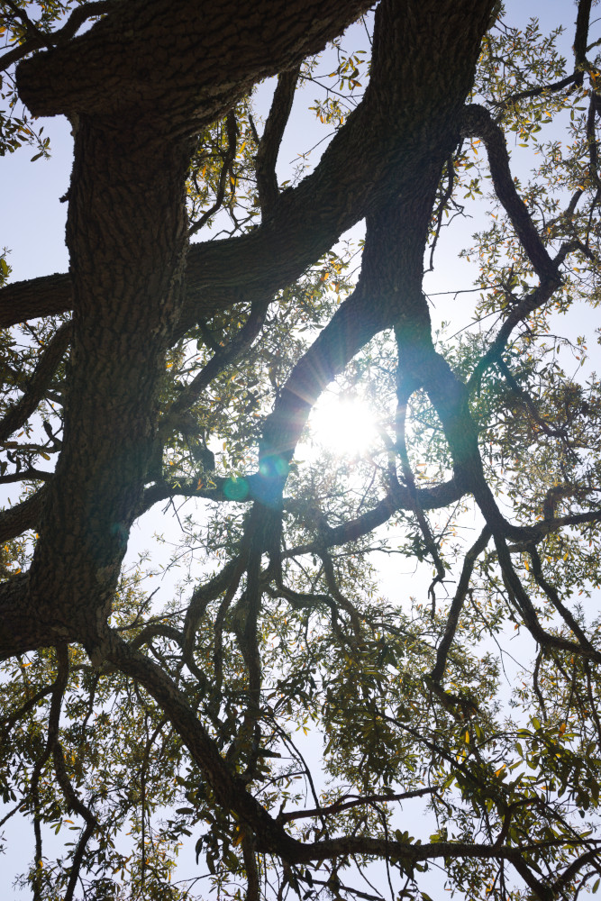

A dull shining stone will never garner the same respect as a brilliant ball of light. The celestial orbs don't care about attention or anything else. Chandeliers spinning in the sky shoot down the stars and comets along with all the other pompous objects floating around lazily. These things of a dying structural ancestry try and staunch all creation that isn't them.
